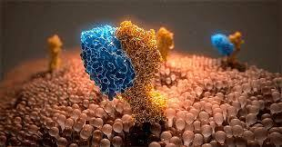
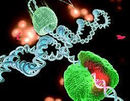
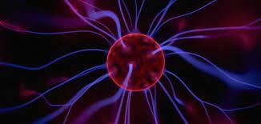
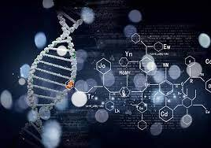
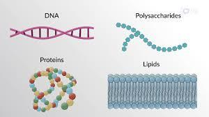

Біофізика
Біофізика — галузь науки, яка вивчає живу природу через фізичні та фізико-хімічні явища зародження, формування, життєдіяльність, відтворення життя на всіх рівнях, починаючи з молекул, клітин, органів та тканин, закінчуючи організмами системами та біосфери і ноосфери в цілому.
Напрями
- Молекулярна біофізика вивчає фізико-хімічні властивості й функціональну роль біологічних макромолекул (біополімерів) та молекулярних комплексів (ультраструктур) живих організмів, які створюють функціональні одиниці клітин, характер взаємодії їх з іонами, молекулами і радикалами, їхньої просторової будови й енергетики процесів, що в них відбуваються.
- Біофізика клітини вивчає фізико-хімічні основи функціонування клітини, будову й основні функції біологічних мембран (поверхневої плазматичної мембрани та мембран внутрішньоклітинних органоїдів) — їхньої проникності, адгезивності, каталітичної активності, електро- та хімозбудливості, — енергетичні процеси клітини, її механічні та електричні властивості.
- Біофізика органів чуття з'ясовує молекулярні фізико-хімічні механізми рецепції, вивчає процеси трансформації енергії зовнішніх стимулів у специфічні реакції нервових клітин і механізмів кодування інформації в органах чуття.
- Біофізика складних систем досліджує явища та механізми системогенезу (еволюція, індивідуальний розвиток) та функціонування живих організмів чи біоценозів (соціуму), проблеми регулювання й саморегулюванняна рівні клітин, органів, організмів та біоценозів і біосфери в цілому.
- Теоретична і математична біофізика розглядає теоретичні основи біофізики, зокрема питання кінетики і термодинаміки, здійснює математичне моделювання біологічних процесів, структури та властивостей окремих макромолекул і субклітинних утворень (макромолекулярних комплексів).
- Прикладна біофізика є цільові дослідження питань прикладного характеру та використання знань, методів, контролю чи керування явищами задля прикладних розробок та їх застосування: медична, екологічна, розвитку, та технічні (біотехнічні) чи технологічні їх напрями:
- інформатика, хоч не є ґрунтовним розділом біофізики, та дуже тісно пов'язана з нею в сфері біонічного підходу (інженеринг, нейронні мережі, моделювання);
- Біоінформатика, саме з позиції комунікацій, програм та читання, запису, трансляції, сприйняття, обробки сигналів у природних біосистемах є ґрунтовним розділом біофізики сенсорних систем — психофізика, комунікативна та ергономічна біофізика;
- Біометрія: метрологічна, медична, ергономічна, біотехнічна, екологічна;
- Біомеханіка пов'язує функції та структуру опорно-рухового апарату з рухом біосистем — протезування, робототехніка, ергономіка, дизайн, архітектура;
- Біофізика еволюційних процесів та індивідуальний розвиток — системогенез, гомеостаз, формоутворення, ведучі чинники норми розвитку та життєдіяльності та патогенезу і їх оздоровчий чи реабілітаційний, біомедичний, психофізичний аспекти);
- біофізика періодичних (циклічних) процесів — біоритмологія та хрономедицина, адаптаційні механізми, періодичні процеси, фізичні умови та стимули для компенсації чи посилення дії періодичних умов природних чи штучних джерел впливу;
- Екологічна геобіофізика — дослідження, класифікація біофізичних аномалій геофізичного та антропогенного походження, контроль та запобігання і профілактики їх негативного впливу;
- Біофізичні продуктивні технології — біонічний, нанотехнологічний, фармакологічний, харчовий чи біопродуктивний напрями (променеві, магнітні та інші чинники, отримуючи біогаз, рідке біопальне чи технічні розчинники та оливи, селективні та конструкційні матеріали тощо).




